Mô hình: Logistic Regression
Tham số: {'C': 1}
Độ chính xác test (%): 100.0
Số thành phần PCA: 124
Tốc độ dự đoán batch / đơn lẻ (ms/ảnh): 0.217 / 0.726
Ngưỡng người lạ: 0.82
Cách chọn ngưỡng: Cân bằng FAR/FRR
Ảnh lạ dùng chọn ngưỡng: 150
Ảnh lạ kiểm tra bị nhận nhầm: 0/14
Ảnh quen kiểm tra nhận đúng sau ngưỡng: 60/60
FAR / FRR trên ảnh dùng chọn ngưỡng (%): 2.0 / 1.7
Người được điểm danh (trong lớp): Bui_Anh_Tuan, Bui_Trung_Hieu, Hoang_Le_Hai, Hoang_Tuan_Hung, Le_Thanh_Cao, Ly_The_Anh, Mai_Manh_Hung, Nguyen_Hoang_Anh, Nguyen_Trong_Thuy, Nguyen_Trung_Dung, Nguyen_Van_Lam, Tong_Van_Dung, Vu_Duy_Anh, Vu_Van_Dai, Vu_Viet_Bao
| mo_hinh | tham_so | cv_% | test_% | precision | recall | f1 | ms_batch | ms_don_le |
|---|---|---|---|---|---|---|---|---|
| Logistic Regression | {'C': 1} | 100.0 | 100.0 | 1.0 | 1.0 | 1.0 | 0.217 | 0.726 |
1_anh_mau.png
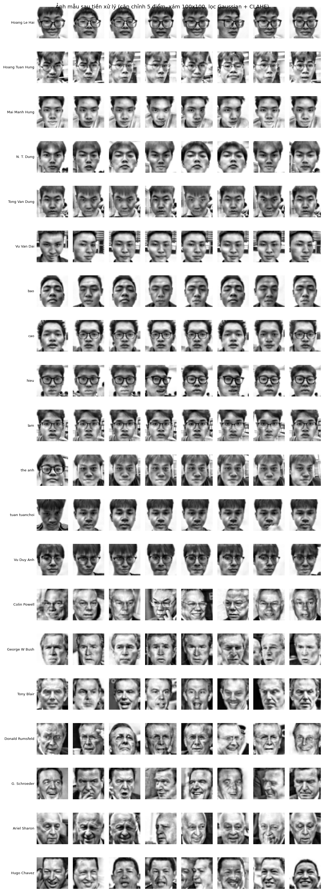
1_can_bang_sang.png
1_so_anh_moi_nguoi.png
2_chia_train_test.png
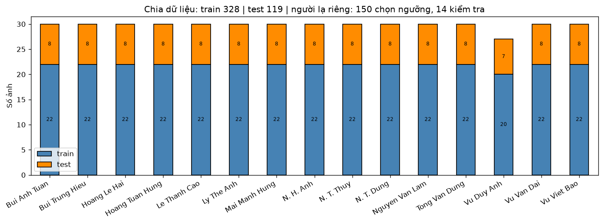
3_eigenfaces.png
3_khoi_phuc_pca.png
3_pca_phuong_sai.png
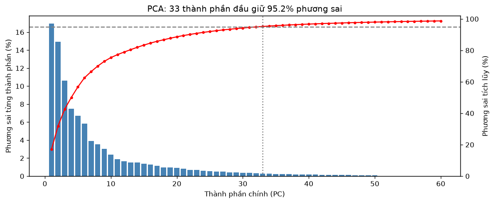
3_truoc_sau_pca.png
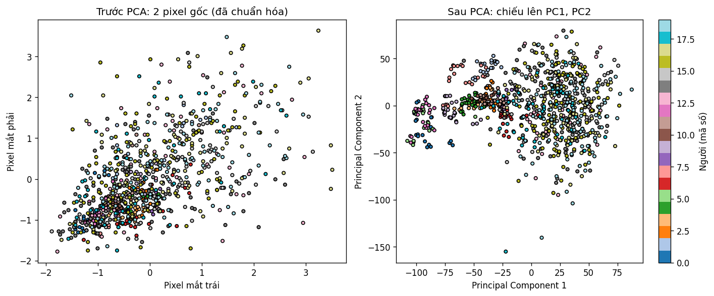
3_chon_tham_so_C.png
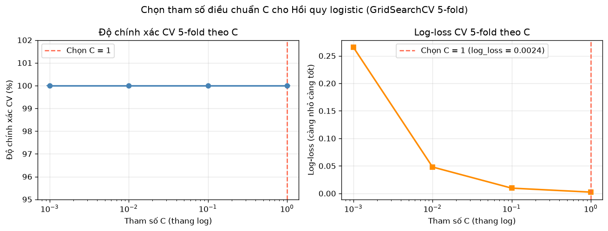
4_du_doan_tap_test.png
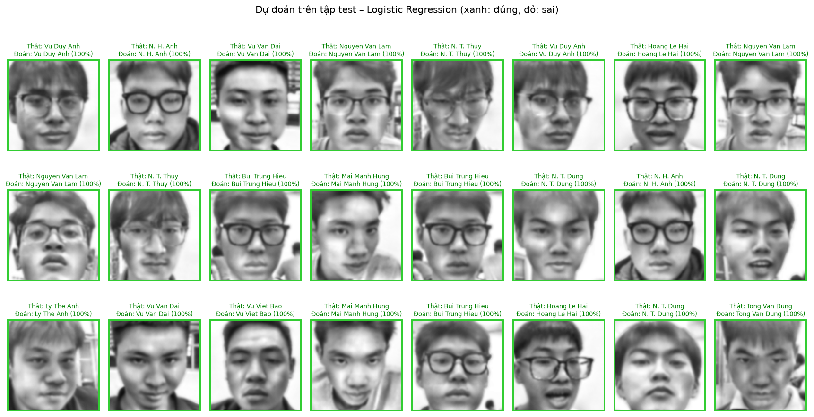
4_xac_suat_du_doan.png
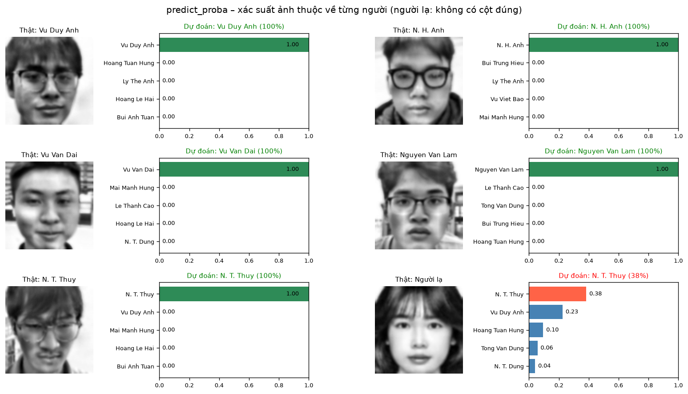
5_danh_gia_logistic.png
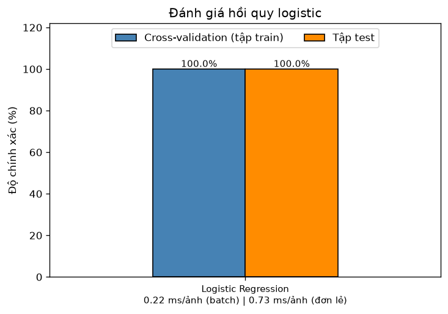
5_ma_tran_nham_lan.png
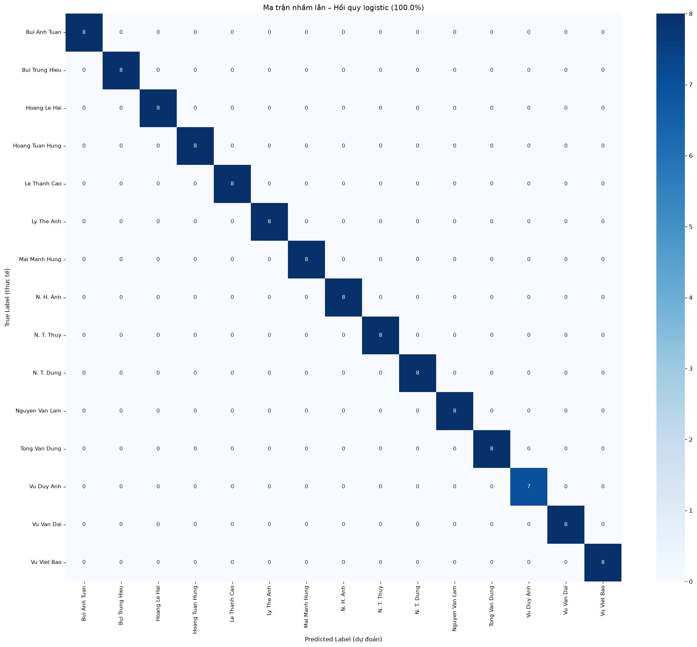
5_nguoi_la.png
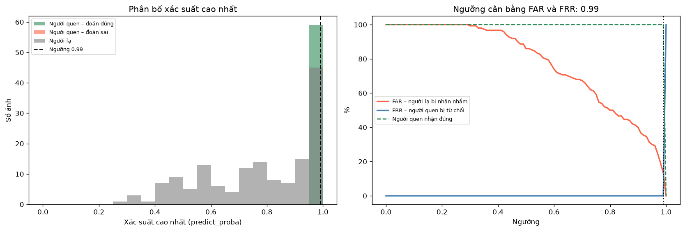
5_nguoi_la_anh.png
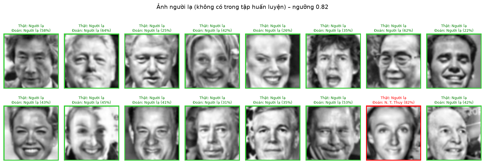
5_nguoi_la_kiem_tra.png
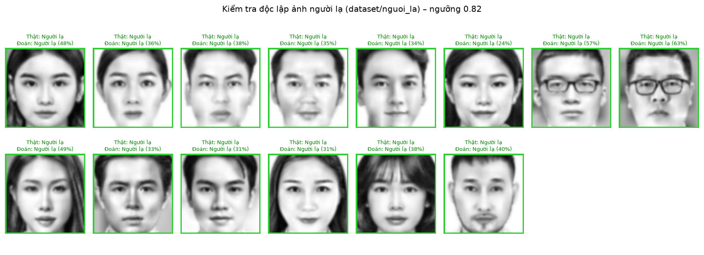
5_roc_auc.png
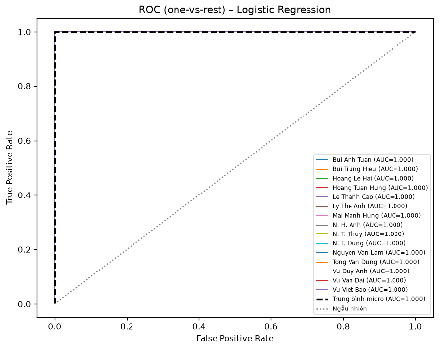
5_theo_tu_the.png
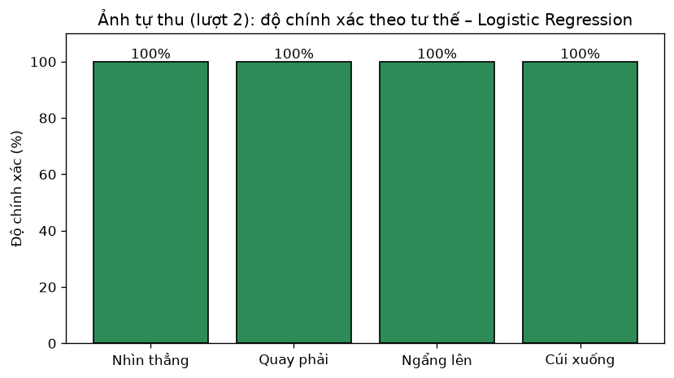
precision recall f1-score support
Bui_Anh_Tuan 1.00 1.00 1.00 8
Bui_Trung_Hieu 1.00 1.00 1.00 8
Hoang_Le_Hai 1.00 1.00 1.00 8
Hoang_Tuan_Hung 1.00 1.00 1.00 8
Le_Thanh_Cao 1.00 1.00 1.00 8
Ly_The_Anh 1.00 1.00 1.00 8
Mai_Manh_Hung 1.00 1.00 1.00 8
Nguyen_Hoang_Anh 1.00 1.00 1.00 8
Nguyen_Trong_Thuy 1.00 1.00 1.00 8
Nguyen_Trung_Dung 1.00 1.00 1.00 8
Nguyen_Van_Lam 1.00 1.00 1.00 8
Tong_Van_Dung 1.00 1.00 1.00 8
Vu_Duy_Anh 1.00 1.00 1.00 7
Vu_Van_Dai 1.00 1.00 1.00 8
Vu_Viet_Bao 1.00 1.00 1.00 8
accuracy 1.00 119
macro avg 1.00 1.00 1.00 119
weighted avg 1.00 1.00 1.00 119
| file | trang_thai | du_doan | xac_suat_cao_nhat |
|---|---|---|---|
| nguoi_la_001.jpg | tu_choi_dung | Nguoi la | 0.4820 |
| nguoi_la_002.jpg | tu_choi_dung | Nguoi la | 0.3611 |
| nguoi_la_003.jpg | tu_choi_dung | Nguoi la | 0.3839 |
| nguoi_la_004.jpg | tu_choi_dung | Nguoi la | 0.3488 |
| nguoi_la_005.jpg | tu_choi_dung | Nguoi la | 0.3426 |
| nguoi_la_006.jpg | tu_choi_dung | Nguoi la | 0.2385 |
| nguoi_la_007.jpg | tu_choi_dung | Nguoi la | 0.5680 |
| nguoi_la_008.jpg | tu_choi_dung | Nguoi la | 0.6288 |
| nguoi_la_009.jpg | tu_choi_dung | Nguoi la | 0.4902 |
| nguoi_la_010.jpg | tu_choi_dung | Nguoi la | 0.3280 |
| nguoi_la_011.jpg | tu_choi_dung | Nguoi la | 0.3062 |
| nguoi_la_012.jpg | tu_choi_dung | Nguoi la | 0.3081 |
| nguoi_la_013.jpg | tu_choi_dung | Nguoi la | 0.3842 |
| nguoi_la_014.jpg | tu_choi_dung | Nguoi la | 0.3987 |